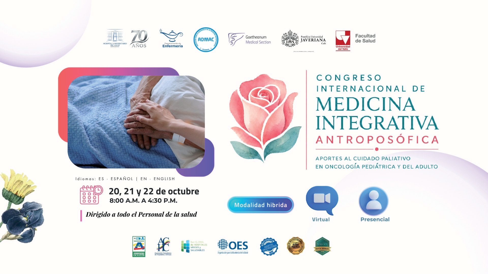
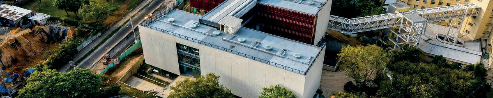
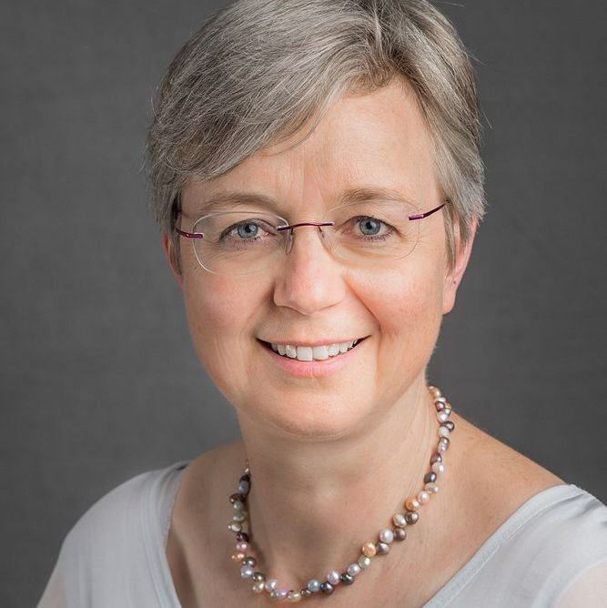
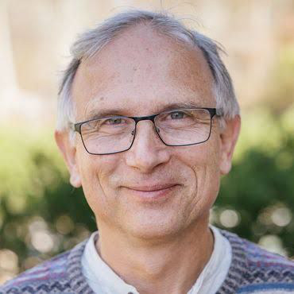
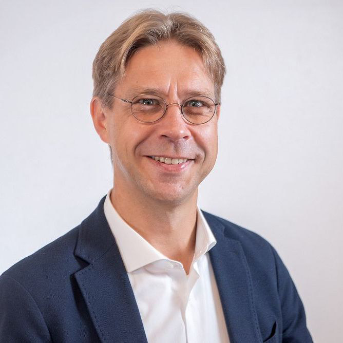
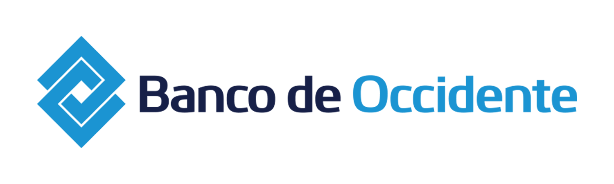
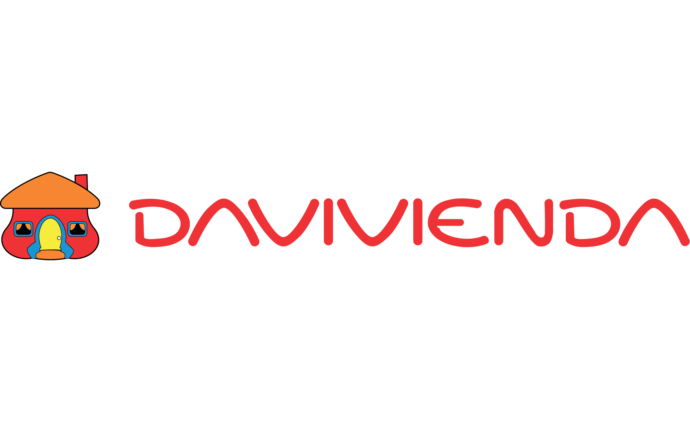

Del 20 al 22 de octubre, está planeado desarrollar el congreso, en Cuidado Paliativo en Oncología del adulto y en pediatría entre3 y 5 años, buscando convertirse en una experiencia viva que contribuya a ampliar la comprensión del Ser Humano y fortalecerlas prácticas terapéuticas.
Nos encontraremos en Cali, en donde se dispondrá de herramientas para apoyar y prevenir las secuelas de eventos desafiantespara el Ser Humano, como es un diagnóstico oncológico en fases de cuidado paliativo, adicionalmente en el marco de esteevento, hemos considerado la experiencia vivida por el desastre natural e incluiremos dentro de la programación, abordajespara acompañar a las personas frente al dolor y el sufrimiento, a fin de prevenir las secuelas del stress post traumático y la fatigacrónica.
Una oportunidad para conocer como el sistema médico integrativo antroposófico, amplia el cuidado paliativo en oncología
convencional con los métodos cognitivos y los resultados de la antroposofía, en este momento de la enfermedad en que hay
mucha incertidumbre y el fortalecimiento de lo humano se convierte en un acto esencial.
Sera un espacio académico de referencia para
Latinoamérica, orientado a promover el diálogo
interdisciplinario entre profesionales de la salud,
investigadores, docentes con experiencia en hospitales en
Alemania y Suiza y estudiantes interesados en conocer un
modelo integrativo de atención centrado en la persona.
El programa está planeado para desarrollarlo entre 3 y 5
años y quiere convertirse en una experiencia viva que
contribuya a ampliar la comprensión del Ser Humano y
fortalecer la práctica terapéutica.
A través del tema central: El Cuidado Paliativo en oncología pediátrica y del adulto conoceremos la imagen del Ser humano, la
importancia del desarrollo biográfico, el contexto social y ambiental en la aparición de la enfermedad oncológica y como las
terapias antroposóficas pueden activar la voluntad de sanar en el paciente y la voluntad de curar en el médico.
El Contexto del Cuidado Paliativo nos confronta con el umbral de la muerte, lo que constituye un desafío para la vida anímica del
paciente, la familia y de los terapeutas, en este momento se vuelve aún más importante centrar la mirada en el ser humano como
eje del arte de curar, reconociendo la fuerza de la voluntad consciente, la presencia viva del corazón y la responsabilidad de cada
uno en la construcción del futuro.
Conferencias magistrales
Conversatorios y talleres
Presentaciones científicas
Experiencias terapéuticas
Una mirada al desarrollo y alcance
internacional de la medicina
antroposófica como práctica de
atención integral.
Explora cómo las etapas tempranas
de la vida influyen en la prevención
de la enfermedad oncológica.
Reflexión sobre factores de riesgo,
autocuidado y estrategias de
prevención desde una perspectiva
integral.
Presenta recursos terapéuticos que
acompañan el tratamiento
oncológico con una visión centrada
en la persona.
Un abordaje sensible de los grandes
umbrales de la existencia humana y
su significado biográfico.
Enfatiza la presencia humana, el
cuidado compasivo y el
acompañamiento respetuoso en el
final de la vida.
CONVERSATORIOS
Experiencias en Colombia: hospitalarias, ambulatorias y de docencia



Médica, especializada en hematología y
oncología, y miembro de la Sección
Médica del Goetheanum, en Dornach,
Suiza.
Nació en 1968 en Stuttgart, Alemania. Se
formó en educación de apoyo en las
escuelas Camphill Rudolf Steiner de
Aberdeen, Reino Unido.
De 2005 a 2017, fue médica principal en
el Departamento de Oncología del
Hospital Comunitario Antroposófico de
Havelhöhe, en Berlín, Alemania.
De 2017 a 2023, dirigió el Departamento
de Oncología de la Clínica Arlesheim, en
Suiza.
Desde septiembre de 2023, forma parte
del equipo directivo de la Sección Médica
del Goetheanum en Dornach Suiza.
Enfermero Profesional
Fundador y director del Centro Médico-
pedagógico de la Filderklinik - Alemania
Coordinador del Foro Internacional de
Enfermería Antroposófica (IFAN)
Presidente de la Asociación Internacional
de enfermería antroposófica (ICANA).
Suiza.
Dr. Especialista en pediátría y
adolescentes, neumología pediátrica, y
endocrinología y diabetología
pediátricas; médico antroposófico
(GAÄD); terapeuta de Dinámica Espacial;
terapeuta de baños antroposóficos;
médico jefe del Departamento de
Medicina Pediátrica y de Adolescentes y
Psicosomática en Stade. Docente de
fisiología del desarrollo, pediatría y
patología en la Universidad Alanus de
Artes y Ciencias Sociales de Alfter (para
los programas de grado en arteterapia,
euritmia terapéutica, musicoterapia y
terapia de educación artística). Profesor
universitario de pediatría en la
Universidad Riga Stradiņš de Letonia.
Participa activamente en seminarios y
conferencias a nivel internacional.
150.000 COP / 45 USD
700.000 COP / 195 USD
750.000 COP / 210 USD
850.000 COP / 240 USD
| Hora | Martes 20 | Miércoles 21 | Jueves 22 |
|---|---|---|---|
| De 08:00 a.m. a 10:00 a.m. |
El sistema de la Medicina Dr .Markus Krüger |
La Imagen del Ser humano y el Dr .Markus Krüger |
Abordaje científico espiritual Dra. Marion Debus |
| 10:00 – 10:30 a.m. RECESO | |||
| De 10:30 a.m. a 12:30 p.m. |
La Imagen del Ser humano Dr. Markus Krüger |
El shock y el estrés en los Dr. Markus Krüger |
¿Cómo abordar el shock Dr. Markus Krüger |
| 12:30 – 2:00 p.m. RECESO ALMUERZO | |||
| De 2:00 p.m. a 3:30 p.m. |
Nacimiento y muerte. Enfermero Rolf Heine |
Acompañamiento al Enfermero Rolf Heine |
Cuidado al Cuidador – em- |
| 3:30 – 3:40 p.m.RECESO | |||
| De 3:40 p.m. a 4:30 p.m. |
Conversatorio sobre las |
Conversatorio sobre las |
El cuidado de los deudos |

Cuenta corriente No. 042-02753-2 del Banco de Occidente

Cuenta de ahorros No. 466700076485 de Davivienda
Portal de pagos: https://portalpagos.davivienda.com/#/comercio/6156/ADMAC
Pago por PayPal: https://www.paypal.com/ncp/payment/PFUMKEYTSJY5N
A nombre de ASOCIACION PARA EL DESARROLLO DE LA MEDICINA ANTROPOSOFICA ADMAC –
NIT 900.756.306-8
CALI – COLOMBIA
https://www.cali.gov.co/turismo/
CONOCE A NUESTROS PATROCINADORES
ADMAC: https://www.admac.com.co
HOSPITAL UNIVERSIRTARIO DEL VALLE: https://www.huv.gov.co
UNIVERSIDAD DEL VALLE: https://www.univalle.edu.co/
PONTIFICIA UNIVERSIDAD JAVERIANA – CALI: https://www.javerianacali.edu.co/
SECCION MEDICA GOETHEANUM: https://medicalsection.goetheanum.ch